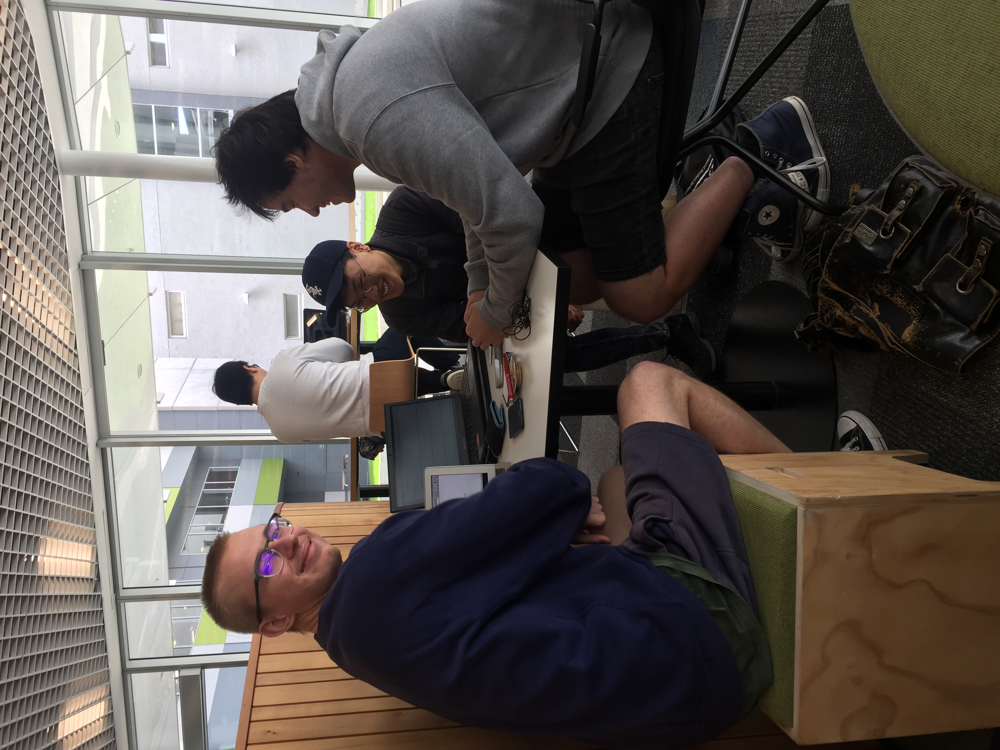

The usability of quick response (QR) codes.
QR codes are a very common appearance but are they fit-for-purpose or well used? Does the use of QR code functionality make a mobile application more usable?
In order to gather the data required we will conduct a number of interviews/experiments regarding the QR codes. We have interviewed a number of people from a broad demographic in terms of age, gender and educational background. Each interview is a verbal (audio recorded) 1-2 minute questionnaire of open-ended questions (audio files below).